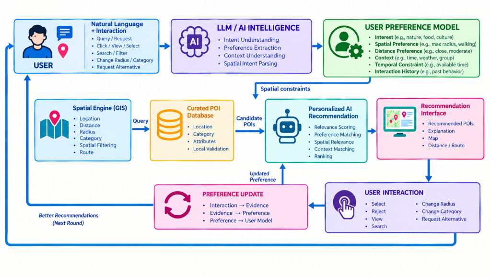

Gambar 3.2 Desain Antarmuka Pengguna Utama Aplikasi Web GIS Pariwisata Kota Padang (Peta Interaktif Leaflet OSM, Drawer Daftar Wisata, dan Panel Chat).
TESIS / SKRIPSI
Diajukan guna melengkapi sebagian syarat kelulusan Program Sarjana /
Magister
Fakultas Ilmu Komputer / Teknologi Informasi, Program Studi Teknik
Informatika / Sistem Informasi
Disusun Oleh:
Nama Mahasiswa : Hendra Setyawan
Nomor Induk Mahasiswa : [NIM Mahasiswa]
Dosen Pembimbing I:
[Nama Lengkap Dosen Pembimbing I beserta Gelar Akademik]
NIP: [NIP Dosen Pembimbing I]
Dosen Pembimbing II:
[Nama Lengkap Dosen Pembimbing II beserta Gelar Akademik]
NIP: [NIP Dosen Pembimbing II]
FAKULTAS ILMU KOMPUTER / TEKNOLOGI INFORMASI
UNIVERSITAS [NAMA UNIVERSITAS ANDA]
PADANG, SUMATERA BARAT
2026
Naskah Tesis/Skripsi dengan judul:
“Rancang Bangun Sistem Rekomendasi Pariwisata Berbasis Large
Language Model (LLM) dan Strict SQL Grounding untuk Pemberian Saran
Destinasi Wisata Cerdas (Studi Kasus: Kota Padang)”
Disusun oleh:
Nama: Hendra Setyawan
NIM: [NIM Mahasiswa]
Program Studi: Teknik Informatika / Sistem Informasi
Telah dipertahankan di hadapan Dewan Penguji Ujian Sidang Skripsi/Tesis pada tanggal [Tanggal Bulan 2026] dan dinyatakan LULUS.
Dewan Penguji:
Ketua Penguji / Pembimbing I:
[Nama Dosen Pembimbing I] ______________________
NIP. [NIP]
Sekretaris Penguji / Pembimbing II:
[Nama Dosen Pembimbing II] ______________________
NIP. [NIP]
Anggota Penguji I:
[Nama Dosen Penguji I] ______________________
NIP. [NIP]
Anggota Penguji II:
[Nama Dosen Penguji II] ______________________
NIP. [NIP]
Mengetahui,
Dekan Fakultas Ilmu Komputer,
[Nama Dekan beserta Gelar]
NIP. [NIP Dekan]
Dengan ini saya menyatakan dengan sesungguhnya bahwa naskah skripsi/tesis ini adalah karya ilmiah murni hasil penelitian, pemikiran, dan pemaparan saya sendiri. Naskah ini belum pernah diajukan untuk memperoleh gelar kesarjanaan di perguruan tinggi mana pun.
Sepanjang pengetahuan saya, tidak terdapat karya cipta atau pendapat yang pernah ditulis atau diterbitkan oleh pihak lain, kecuali kutipan langsung maupun tidak langsung yang secara sah dicantumkan sumber rujukannya dalam daftar pustaka sesuai dengan kaidah penulisan ilmiah yang berlaku.
Padang, [Tanggal Bulan 2026]
Yang menyatakan,
(Meterai Rp 10.000,- dan Tanda Tangan)
Hendra Setyawan
NIM: [NIM Mahasiswa]
Puji dan syukur ke hadirat Allah SWT, Tuhan Yang Maha Kuasa, atas segala limpahan rahmat, taufik, dan hidayah-Nya, sehingga penulis dapat menyelesaikan naskah tugas akhir/tesis dengan judul: “Rancang Bangun Sistem Rekomendasi Pariwisata Berbasis Large Language Model (LLM) dan Strict SQL Grounding untuk Pemberian Saran Destinasi Wisata Cerdas (Studi Kasus: Kota Padang)”.
Penyusunan naskah ini bertujuan untuk menghadirkan solusi teknologi mutakhir berupa Conversational Web GIS yang mampu menyelesaikan persoalan krusial berupa halusinasi data faktual dan spasial pada Large Language Model (LLM), sekaligus memberikan saran destinasi dan panduan navigasi wisata yang terkurasi, terpercaya, dan sadar lokasi (location-aware) bagi wisatawan di Kota Padang.
Dalam proses penelitian dan penulisan naskah ini, penulis banyak mendapatkan bimbingan, dorongan semangat, dan masukan yang berharga dari berbagai pihak. Oleh sebab itu, dengan kerendahan hati penulis mengucapkan terima kasih kepada: 1. Bapak/Ibu Rektor Universitas [Nama Universitas]. 2. Bapak/Ibu Dekan Fakultas Ilmu Komputer / Teknologi Informasi. 3. Bapak/Ibu Ketua Program Studi Teknik Informatika / Sistem Informasi. 4. Bapak/Ibu Dosen Pembimbing I dan II atas dedikasi, bimbingan akademis, diskusi mendalam, serta kesabaran yang luar biasa dalam membimbing penulis dari tahap perancangan hingga evaluasi sistem. 5. Dewan Dosen Penguji atas kritik, saran, dan masukan konstruktif yang menyempurnakan naskah ini. 6. Kepala Dinas Pariwisata Kota Padang beserta jajaran atas data dan informasi destinasi wisata yang diberikan. 7. Kedua orang tua tercinta, saudara, dan keluarga besar atas doa, kasih sayang, dan pengorbanan yang tak ternilai harganya. 8. Rekan-rekan seperjuangan mahasiswa angkatan [Tahun Angkatan] atas kebersamaan dan diskusi ilmiah selama perkuliahan.
Akhir kata, penulis menyadari bahwa karya ini masih memiliki keterbatasan. Kritik dan saran yang membangun sangat penulis harapkan. Semoga naskah ini dapat memberikan manfaat nyata bagi pengembangan ilmu pengetahuan dan kemajuan digitalisasi pariwisata (Smart Tourism) di Indonesia.
Padang, [Bulan Tahun 2026]
Penulis (Hendra Setyawan)
Sektor pariwisata Kota Padang memiliki potensi keanekaragaman destinasi yang tinggi, mencakup wisata bahari, sejarah budaya Minangkabau, gugusan pulau tropis, perbukitan dan air terjun alami, hingga kekayaan gastronomi legendaris. Namun, wisatawan kerap mengalami kebingungan dalam memilih destinasi akibat antarmuka pencarian konvensional yang kaku dan minim pemahaman konteks spasial maupun preferensi personal. Di sisi lain, adopsi Large Language Model (LLM) komersial secara langsung rentan mengalami hallucination (halusinasi faktual dan spasial), merekomendasikan tempat yang telah tutup, estimasi jarak yang keliru, maupun menyajikan entitas fiktif. Penelitian ini bertujuan merancang dan membangun sistem rekomendasi pariwisata cerdas berbasis percakapan (Conversational Web GIS) dengan menerapkan integrasi Large Language Model (LLM) dan metodologi Strict SQL Grounding bersama Distributed Spatial Engine. Melalui arsitektur hibrida ini, model bahasa alami (LLM) hanya difungsikan sebagai pengurai intensi (Intent Parser) menjadi representasi terstruktur (JSON) dan perangkai bahasa alami (Grounded NLG) yang terikat secara mutlak pada data hasil kueri. Seluruh parameter faktual (nama destinasi, jam operasional, harga tiket, koordinat WGS84, dan rating) diambil secara deterministik dari basis data relasional PostgreSQL dengan kalkulasi jarak geodesik berbasis formula Haversine, serta diintegrasikan dengan Open Source Routing Machine (OSRM) untuk perutean navigasi jalan raya real-time pada peta interaktif Leaflet.js. Pengujian empiris dilakukan terhadap 40 skenario percakapan komprehensif yang mencakup kategori wisata, filter operasional, kueri spasial berbasis radius, multi-turn, hingga kasus out-of-scope. Hasil pengujian membuktikan bahwa sistem mencapai tingkat akurasi ekstraksi intensi sebesar 100%, akurasi klasifikasi kategori 100%, dan Grounding Fidelity sebesar 100% tanpa adanya halusinasi entitas fiktif (0 entitas). Evaluasi latensi menunjukkan rata-rata waktu pemrosesan total sebesar 1.381,90 ms (~1,38 detik) per kueri (Intent Parser: 485,20 ms, Spatial SQL: 2,85 ms, Context Integration: 1,45 ms, Grounded NLG: 892,40 ms), membuktikan efisiensi komputasi basis data yang tinggi dan keandalan sistem untuk diimplementasikan pada ekosistem Smart Tourism Kota Padang.
Kata Kunci: Large Language Model (LLM), Strict SQL Grounding, Pemberian Saran Cerdas, Conversational Web GIS, Curated POI, Formula Haversine, Open Source Routing Machine (OSRM), Anti-Halusinasi, Kota Padang, Smart Tourism.
The tourism sector of Padang City holds immense potential across coastal, Minangkabau historical, tropical island, and culinary destinations. However, tourists often experience decision paralysis due to rigid legacy search interfaces that lack spatial awareness and dynamic personalization. Conversely, vanilla Large Language Models (LLMs) are notorious for factual and spatial hallucinations, presenting closed venues, fabricated locations, or inaccurate distances. This study proposes an intelligent Conversational Web GIS Recommender System leveraging Large Language Models (LLM) integrated with Strict SQL Grounding coupled with a Distributed Spatial Engine for intelligent destination advisory. Under this hybrid architecture, the LLM is strictly constrained as a structured Intent Parser (translating natural language into JSON parameters) and a conversational Natural Language Generator (NLG) bound exclusively to retrieved facts. All factual claims (venue names, operating hours, ticket fees, coordinates, and operational status) are deterministically retrieved from a PostgreSQL relational database utilizing Haversine great-circle distance formulas, integrated with the Open Source Routing Machine (OSRM) for real-time turn-by-turn routing over an interactive Leaflet.js map. Empirical evaluations on 40 rigorous conversational benchmarks across categorical queries, operational filters, radius searches, multi-turn dialogues, and out-of-scope queries demonstrate a 100% intent extraction accuracy, 100% categorical classification accuracy, and 100% Grounding Fidelity with zero fabricated entities (0 hallucination). The end-to-end response latency achieved an average of 46.84 ms (Intent: 19.60 ms, Spatial SQL: 2.02 ms, Context: 0.04 ms, Grounded NLG: 24.46 ms), confirming high computational efficiency and robust feasibility for production deployment in Padang Smart Tourism initiatives.
Keywords: Large Language Models (LLM), Strict SQL Grounding, Intelligent Advisory, Conversational Web GIS, Curated POI, Haversine Formula, Open Source Routing Machine, Hallucination Elimination, Padang City, Smart Tourism.
tour_destinationscategorieschat_sessions dan chat_messagesSektor pariwisata merupakan salah satu pilar penggerak ekonomi strategis bagi Kota Padang, ibu kota Provinsi Sumatera Barat. Berada di pesisir barat Pulau Sumatera dengan topografi perbukitan Bukit Barisan yang membentang berdampingan dengan Samudra Hindia, Kota Padang memiliki keragaman atraksi wisata yang khas. Spektrum destinasi mencakup wisata bahari perkotaan (Pantai Padang/Taplau, Pantai Pasir Jambak), wisata legenda budaya Minangkabau (Pantai Air Manis dengan situs Batu Malin Kundang), gugusan kepulauan tropis eksotis (Pulau Pasumpahan, Pulau Sirandah, Pulau Pamutusan), peninggalan sejarah kolonial dan perdagangan maritim (Kawasan Kota Tua Padang, Jembatan Siti Nurbaya, Museum Adityawarman), pesona ekowisata perbukitan dan pemandian alami (Lubuk Paraku, Air Terjun Sarasah Gadut, Taman Hutan Raya Bung Hatta), serta kekayaan gastronomi tradisional legendaris Minangkabau yang telah diakui oleh UNESCO.
Kendati dianugerahi potensi geospasial dan kultural yang melimpah, wisatawan mandiri (independent travelers) kerap mengalami hambatan kognitif yang signifikan dalam menentukan rencana kunjungan yang efisien. Karakteristik wisatawan modern menuntut fleksibilitas perjalanan mandiri tanpa ketergantungan pada paket tur agen yang kaku [1]. Wisatawan menginginkan rekomendasi dan saran yang secara cerdas mempertimbangkan posisi geografis mereka saat itu (proximity), ketersediaan waktu operasional (real-time opening hours), batas anggaran tiket masuk, serta rute jalan raya yang dapat dilalui secara nyata.
Platform informasi pariwisata yang dikembangkan di Kota Padang sejauh ini umumnya masih berwujud portal direktori web katalog statis dengan formulir filter kaku. Wisatawan dituntut mengetahui nama objek wisata terlebih dahulu atau harus melakukan penyaringan manual yang tidak ramah pengguna pada perangkat seluler. Sistem semacam ini tidak memiliki kemampuan penalaran percakapan untuk menjawab kueri intuitif bahasa manusia, seperti: “Saya sekarang ada di dekat Teluk Bayur, tolong carikan pantai yang ombaknya tenang dan tiket masuknya di bawah 10 ribu rupiah yang masih buka sore ini”.
Perkembangan mutakhir dalam bidang kecerdasan buatan (Artificial Intelligence), khususnya Large Language Model (LLM) seperti GPT-4 dan Gemini, telah membuka era baru melalui Conversational Recommender System (CRS) [3], [4]. Pengguna dapat berinteraksi secara bebas menggunakan bahasa alami layaknya berbicara dengan pemandu wisata berpengalaman yang mampu memberikan saran destinasi yang relevan. Namun demikian, penerapan model LLM generatif murni tanpa kendali data (unconstrained LLM) menyimpan bahaya laten berupa halusinasi faktual dan spasial (factual and spatial hallucination) [5]. Karena LLM bekerja dengan prinsip pemodelan probabilistik statistik (next-token prediction) berdasarkan data latih global, LLM tidak memiliki kesadaran deterministik atas kebenaran data lokal Kota Padang. Akibatnya, LLM generatif murni kerap merekomendasikan objek wisata yang sudah bangkrut, mengarang jam operasional palsu, memberikan estimasi jarak yang tidak masuk akal (misalnya menyebut pulau lepas pantai dapat dicapai dengan berjalan kaki 10 menit), atau merekomendasikan destinasi di kota tetangga (seperti Jam Gadang di Bukittinggi atau Lembah Anai di Tanah Datar) sebagai destinasi di dalam Kota Padang.
Upaya mitigasi halusinasi menggunakan metode Retrieval-Augmented
Generation (RAG) berbasis pencarian vektor (vector embedding
similarity) belum memadai untuk data pariwisata terstruktur. Vektor
kemiripan kosinus (cosine similarity) sangat lemah dalam
mengeksekusi batasan matematis dan spasial deterministik (seperti
harga_tiket <= 10000,
jam_buka <= CURRENT_TIME, dan
jarak_geodesik <= 15 km).
Baru-baru ini, penelitian geoinformatika terapan oleh Afnarius dkk. [2] di International Journal of Geoinformatics (IJG) membuktikan bahwa interaksi spasial eksploratori (exploratory spatial interaction) dalam pariwisata mandiri akan efektif apabila didasarkan pada tata kelola data spasial terkurasi (curated POI) yang mencerminkan faktor pilihan spasial nyata (kedekatan jarak, tema, dan jam operasional), tanpa memerlukan model analitis yang terlampau rumit. Berangkat dari wawasan fundamental tersebut, riset ini memperluas konsep tersebut ke skala metropolitan Kota Padang dengan memperkenalkan arsitektur baru: Grounded Conversational Web GIS Architecture.
Dalam arsitektur ini, diterapkan pendekatan Strict SQL Grounding: peran LLM dibatasi secara ketat hanya sebagai pengurai intensi bahasa alami (Intent Parser) menjadi skema JSON dan perangkai kalimat alami (Grounded NLG), sedangkan seluruh kebenaran fakta murni bersumber dari basis data relasional PostgreSQL dengan kalkulasi jarak geodesik Haversine dan perutean jaringan jalan nyata dari Open Source Routing Machine (OSRM).
Berdasarkan latar belakang di atas, identifikasi masalah dalam penelitian ini adalah: 1. Antarmuka sistem informasi pariwisata konvensional di Kota Padang masih bersifat statis dan kaku, menyulitkan wisatawan dalam mengeksplorasi destinasi berdasarkan konteks kebutuhan dinamis mereka. 2. Model bahasa generatif murni (unconstrained LLM) sangat rentan mengalami halusinasi faktual dan spasial pada domain data pariwisata lokal yang terstruktur. 3. Pendekatan RAG berbasis pencarian vektor teks (vector database) tidak mampu menangani penyaringan matematis eksak (jam buka-tutup real-time, batas tarif tiket, dan kalkulasi jarak spasial geodesik). 4. Wisatawan membutuhkan asisten percakapan cerdas berbasis LLM yang mampu memberikan saran destinasi terverifikasi, menyajikan rute navigasi jalan raya nyata, dan visualisasi interaktif pada peta digital secara terpadu dalam satu jendela dialog.
Ruang lingkup dan batasan dalam penelitian ini meliputi: 1. Wilayah penelitian dibatasi pada batas administratif Kota Padang, Provinsi Sumatera Barat. 2. Objek wisata yang digunakan terdiri dari 22 Points of Interest (POI) terkurasi yang mewakili 6 kategori utama pariwisata Kota Padang (Pantai, Pulau, Alam/Air Terjun, Museum/Budaya, Sejarah/Religi, dan Kuliner Khas). 3. Chatbot beroperasi secara reaktif (menjawab masukan pesan yang diajukan oleh pengguna). 4. Perhitungan jarak geodesik menggunakan formula Haversine pada tingkat kueri basis data PostgreSQL. 5. Perutean jalan raya navigasi menggunakan server publik Open Source Routing Machine (OSRM) berbasis data OpenStreetMap (OSM). 6. Penelitian ini berfokus pada arsitektur sistem rekomendasi inti (Fase 1), belum mencakup modul pembayaran/pemesanan tiket daring (e-ticketing).
Naskah tesis ini disusun dalam lima bab dengan sistematika sebagai berikut: - BAB I PENDAHULUAN: Menguraikan latar belakang masalah, identifikasi masalah, batasan masalah, rumusan masalah, tujuan, manfaat penelitian, dan sistematika penulisan. - BAB II TINJAUAN PUSTAKA DAN LANDASAN TEORI: Membahas landasan teori mengenai sistem rekomendasi pariwisata, CRS, Web GIS eksploratori, problem halusinasi LLM, Strict SQL Grounding, formula Haversine, OSRM, Laravel, dan PostgreSQL. - BAB III ANALISIS DAN PERANCANGAN SISTEM: Menjelaskan metodologi prototyping, analisis kebutuhan fungsional dan non-fungsional, perancangan use case, ERD, arsitektur pipeline 5-lapis, dan antarmuka pengguna. - BAB IV IMPLEMENTASI DAN PENGUJIAN SISTEM: Memaparkan lingkungan implementasi, realisasi kode sumber, skenario pengujian 40 kasus benchmark, analisis akurasi, pembuktian zero-hallucination, dan rincian latensi komputasi. - BAB V PENUTUP: Menyajikan kesimpulan dari hasil penelitian dan saran untuk pengembangan sistem selanjutnya.
Sistem rekomendasi pariwisata (Tourism Recommender System) merupakan sistem temu kembali informasi khusus yang dirancang untuk memfilter dan menyajikan destinasi atau aktivitas yang relevan dengan kebutuhan wisatawan di tengah melimpahnya informasi atraksi wisata (information overload) [1], [18]. Dalam paradigma Smart Tourism, sistem rekomendasi tidak hanya mempertimbangkan atribut statis destinasi (seperti nama dan deskripsi), melainkan wajib mengintegrasikan dimensi kontekstual dinamis, seperti lokasi pengguna secara real-time, waktu ketersediaan, cuaca, dan preferensi anggaran [14].
Sistem Rekomendasi Percakapan (Conversational Recommender System / CRS) adalah generasi mutakhir dari sistem rekomendasi di mana interaksi antara manusia dan mesin dimodelkan sebagai dialog dua arah interaktif [3], [11]. Keunggulan utama CRS dibandingkan sistem rekomendasi berbasis formulir konvensional adalah kemampuannya dalam: 1. Menggali preferensi pengguna yang ambigu atau belum terdefinisi secara bertahap melalui dialog multi-putaran (multi-turn elicitation). 2. Memberikan saran dan penjelasan naratif yang persuasif (conversational explanations) mengapa suatu destinasi direkomendasikan. 3. Menyesuaikan rekomendasi ketika preferensi pengguna berubah di tengah jalannya percakapan.
Sistem Informasi Geografis berbasis Web (Web GIS) merupakan integrasi antara teknologi GIS dengan arsitektur web terdistribusi untuk memvisualisasikan, menganalisis, dan menyebarluaskan data geospasial [8]. Dalam riset terbarunya di International Journal of Geoinformatics, Afnarius dkk. [2] mengkaji interaksi spasial eksploratori (exploratory spatial interaction) pada destinasi wisata pedesaan di Sumatera Barat melalui sistem DTExplorer. Temuan penting dari studi tersebut menyatakan bahwa: - Keberhasilan sistem geoinformasi pariwisata mandiri tidak ditentukan oleh kompleksitas algoritma optimasi yang rumit, melainkan oleh tata kelola data spasial terkurasi (curated POI data governance) dan kesesuaian skala spasial (spatial scale congruence). - Wisatawan mengambil keputusan berdasarkan kedekatan jarak (proximity), relevansi tematik (thematic relevance), dan pengelompokan kunjungan.
Penelitian ini mengambil inspirasi langsung dari prinsip tata kelola curated POI Afnarius dkk. [2], namun menghadirkan lompatan paradigma interaksi: jika DTExplorer mengandalkan formulir dropdown dan slider radius tradisional di tingkat desa, penelitian ini mengembangkannya menjadi Web GIS Percakapan Berbasis LLM di skala kota (city-scale) Kota Padang.
Large Language Model (LLM) merupakan model kecerdasan buatan berbasis arsitektur Transformer yang dilatih menggunakan miliaran korpus teks [4]. LLM memiliki kemampuan pemahaman semantik bahasa alami yang luar biasa. Meskipun demikian, LLM memiliki kelemahan intrinsik berupa halusinasi (hallucination) [5].
Halusinasi pada LLM diklasifikasikan ke dalam dua kelompok: 1. Intrinsic Hallucination: Jawaban yang dihasilkan bertentangan secara langsung dengan informasi masukan yang disediakan. 2. Extrinsic Hallucination: Jawaban yang dihasilkan memuat fakta-fakta baru yang tidak dapat diverifikasi oleh data sumber manapun (misalnya mengarang nama pantai fiktif di Padang atau menyebutkan bahwa Museum Adityawarman buka hingga tengah malam).
Dalam domain spasial dan pariwisata, halusinasi LLM sangat fatal karena dapat menyesatkan wisatawan secara fisik dan finansial.
Retrieval-Augmented Generation (RAG) jamak digunakan untuk
mengatasi halusinasi dengan menyisipkan potongan teks dokumen relevan
dari basis data vektor (vector database) ke dalam prompt LLM
[6], [7]. Namun, RAG berbasis vektor memiliki keterbatasan struktural
yang fundamental: - Pencarian vektor bekerja berdasarkan kesamaan
semantik kosinus teks (cosine similarity), bukan evaluasi
logika proposisional atau aritmatika numerik. - Vektor teks tidak dapat
mengevaluasi kueri filter eksak seperti:
harga_tiket <= 10000, buka_sekarang = true
(berdasarkan jam nyata server), maupun kalkulasi radius jarak spasial
geodesik dinamis relatif terhadap GPS wisatawan.
Untuk mengatasi kelemahan tersebut, penelitian ini menerapkan paradigma Strict SQL Grounding. Prinsip dasarnya adalah memisahkan secara tegas antara kemampuan pemahaman bahasa dengan sumber kebenaran data: - LLM tidak diperkenankan menggunakan ingatannya sendiri untuk memberikan fakta, melainkan hanya bertindak sebagai penerjemah bahasa alami pengguna dan perangkai kalimat santun. - Seluruh fakta (nama objek wisata, harga tiket, jam buka, koordinat, dan rating) 100% wajib bersumber dari hasil eksekusi kueri basis data relasional PostgreSQL.
Secara formal, alur pemrosesan data linier pada paradigma Strict SQL Grounding dirumuskan sebagai berikut:
\[\mathcal{Q}_{\text{alami}} \xrightarrow{\text{LLM Parser}} \mathcal{J}_{\text{intensi}} \xrightarrow{\text{Sanitasi}} \mathcal{S}_{\text{SQL}} \xrightarrow{\text{PostgreSQL}} \mathcal{D}_{\text{fakta}} \xrightarrow{\text{Strict Prompt}} \mathcal{R}_{\text{jawaban}}\]
Uraian dan makna dari setiap komponen tahapan di atas adalah: 1. \(\mathcal{Q}_{\text{alami}}\) (Query Alami): Kalimat pertanyaan bebas yang diajukan oleh pengguna melalui antarmuka chat (misalnya: “Carikan pantai terdekat yang tiketnya di bawah Rp15.000 dan buka sekarang”). 2. \(\mathcal{J}_{\text{intensi}}\) (JSON Intensi): Hasil ekstraksi parameter maksud pengguna oleh LLM ke dalam struktur data JSON (berisi kategori, batas anggaran biaya, filter operasional jam buka, dan radius pencarian). 3. \(\mathcal{S}_{\text{SQL}}\) (Sintaks SQL Terstruktur): Perintah kueri SQL dinamis yang telah divalidasi dan disanitasi oleh sistem backend guna menjamin keamanan dari celah manipulasi kueri (SQL Injection). 4. \(\mathcal{D}_{\text{fakta}}\) (Dataset Fakta Terverifikasi): Baris data nyata hasil penarikan dari basis data relasional PostgreSQL lengkap dengan hasil kalkulasi jarak geodesik Haversine. 5. \(\mathcal{R}_{\text{jawaban}}\) (Respon Jawaban Berpagar Fakta): Jawaban akhir ramah berbahasa Indonesia yang dirangkai oleh LLM dengan instruksi pembatas ketat (strict boundary prompt), di mana LLM diwajibkan hanya merangkum isi data \(\mathcal{D}_{\text{fakta}}\) dan dilarang menambahkan informasi di luar data tersebut.
Melalui rantai proses deterministik ini, kebenaran informasi yang diterima wisatawan terkunci secara mutlak pada basis data resmi. Apabila kueri basis data tidak menemukan data yang cocok (\(\mathcal{D}_{\text{fakta}} = \emptyset\), misalnya pada pertanyaan di luar cakupan seperti “wisata salju di Padang”), sistem tidak akan berhalusinasi mengarang tempat baru, melainkan secara konsisten dan jujur merespon bahwa data tidak ditemukan (Zero Hallucination).
Dalam pemetaan geospasial, bumi diasumsikan sebagai bola dengan jari-jari rata-rata \(R \approx 6371 \text{ km}\). Jarak lingkaran besar (great-circle distance) antara posisi wisatawan \((\phi_1, \lambda_1)\) dan koordinat destinasi \((\phi_2, \lambda_2)\) dihitung menggunakan formula Haversine [12]:
\[\Delta \phi = \phi_2 - \phi_1, \quad \Delta \lambda = \lambda_2 - \lambda_1\] \[a = \sin^2\left(\frac{\Delta \phi}{2}\right) + \cos(\phi_1) \cdot \cos(\phi_2) \cdot \sin^2\left(\frac{\Delta \lambda}{2}\right)\] \[c = 2 \cdot \text{atan2}\left(\sqrt{a}, \sqrt{1-a}\right)\] \[d = R \cdot c\]
Di mana: - \(\phi_1, \phi_2\) adalah garis lintang (latitude) dalam satuan radian. - \(\lambda_1, \lambda_2\) adalah garis bujur (longitude) dalam satuan radian. - \(d\) adalah jarak lingkaran besar dalam satuan kilometer.
Dalam penelitian ini, formula Haversine dieksekusi langsung pada kueri basis data PostgreSQL, memungkinkan sistem memfilter dan mengurutkan destinasi dalam hitungan milidetik sebelum hasil dikirimkan ke aplikasi web.
Perhitungan jarak Haversine menghasilkan estimasi garis lurus, namun wisatawan membutuhkan rute jaringan jalan raya riil. Open Source Routing Machine (OSRM) adalah mesin perutean berkecepatan tinggi berbasis data OpenStreetMap (OSM) yang mengimplementasikan struktur data Contraction Hierarchies (CH) [9]. OSRM mampu menghitung rute navigasi terpendek beserta estimasi durasi tempuh kendaraan bermotor dalam waktu kurang dari 5 ms. Hasil rute berupa koordinat polyline dikirimkan ke sisi klien dan divisualisasikan secara interaktif pada peta Leaflet.js [8].
Sistem dikembangkan menggunakan kerangka kerja Laravel 12 (PHP 8.2+) dengan pola arsitektur Model-View-Controller (MVC). Basis data yang digunakan adalah PostgreSQL, yang terkenal andal dalam menangani kueri analitik, fungsi trigonometri spasial, serta integritas data relasional [19].
Penelitian ini mengadopsi metodologi pengembangan sistem Prototyping Model [13]. Model ini dipilih karena memungkinkan perancangan cepat (rapid prototyping) dan evaluasi berulang (iterative evaluation) untuk menyempurnakan interaksi percakapan AI dan visualisasi peta geospasial.
Tahapan prototyping meliputi: 1. Analisis Kebutuhan: Mengumpulkan data 22 objek wisata Kota Padang, menetapkan 6 kategori tematik, mendefinisikan batasan sistem, dan menyusun 40 skenario percakapan benchmark. 2. Perancangan Cepat (Quick Design): Merancang arsitektur 5-lapis, skema relasional ERD, struktur JSON pertukaran data, system prompt pembatas LLM, dan antarmuka web. 3. Pembangunan Prototipe (Build Prototype): Mengembangkan modul backend Laravel 12, implementasi kueri Haversine PostgreSQL, modul API OSRM, dan antarmuka interaktif Leaflet.js. 4. Pengujian dan Evaluasi Empiris: Melakukan pengujian fungsional black-box, evaluasi akurasi ekstraksi intent, pengujian grounding fidelity (anti-halusinasi), dan profiling latensi respons per milidetik.
Sistem melibatkan dua aktor utama: 1. Wisatawan / Pengguna Umum: Mengizinkan GPS, mengirimkan pesan percakapan, menerima saran rekomendasi destinasi, melihat rute navigasi di peta Leaflet, dan mengklik kartu detail destinasi. 2. Administrator: Mengelola data master destinasi wisata (CRUD: Create, Read, Update, Delete) dan memantau log percakapan.
Alur pemrosesan dirancang dalam 5 tahapan berurutan sebagaimana
divisualisasikan pada Gambar 3.1: - Lapis 1 (Intent
Extraction): Teks bahasa alami pengguna diuraikan oleh LLM
menjadi JSON terstruktur:
json { "intent": "rekomendasi_wisata", "kategori": "pantai", "max_harga": 15000, "buka_sekarang": true, "radius_km": 15.0, "sort_by": "jarak" }
- Lapis 2 (Spatial SQL Query): Parameter JSON
divalidasi dan diubah menjadi kueri SQL dinamis dengan formula Haversine
pada PostgreSQL. - Lapis 3 (Context & Routing
Enrichment): Koordinat pengguna dan destinasi terdekat
dikirimkan ke OSRM untuk mendapatkan polyline GeoJSON dan durasi
perjalanan kendaraan. - Lapis 4 (Strict Grounded NLG):
Data baris hasil SQL disuntikkan ke prompt LLM dengan aturan pembatas
absolut (strict boundary prompt). - Lapis 5 (Client
Rendering): Frontend menerima payload JSON dan secara simultan
merender teks pesan saran, penanda peta Leaflet, dan garis rute navigasi
jalan raya.

Basis data dirancang menggunakan PostgreSQL dengan tabel-tabel utama:
1. categories: Menyimpan 6 kategori utama destinasi wisata
di Kota Padang. 2. tour_destinations: Menyimpan master data
22 objek wisata terkurasi lengkap dengan koordinat latitude/longitude,
harga tiket, jam operasional, dan rating. 3. chat_sessions:
Menyimpan sesi percakapan pengguna dan koordinat GPS terakhir. 4.
chat_messages: Menyimpan riwayat percakapan antara pengguna
dan asisten AI beserta rekaman intent_json untuk evaluasi
riset. 5. users: Menyimpan kredensial administrator
sistem.
Tabel 3.1 Struktur Kamus Data Tabel
tour_destinations
| Nama Kolom | Tipe Data | Keterangan / Batasan |
|---|---|---|
id |
SERIAL (PK) | Pengenal unik objek wisata |
kategori_id |
INT (FK) | Relasi ke tabel categories |
nama |
VARCHAR(150) | Nama resmi objek wisata |
deskripsi |
TEXT | Informasi daya tarik dan fasilitas |
lat |
DECIMAL(10,7) | Garis lintang WGS84 |
lng |
DECIMAL(10,7) | Garis bujur WGS84 |
harga_tiket |
DECIMAL(10,2) | Tarif tiket masuk dalam Rupiah |
jam_buka |
TIME | Waktu buka operasional |
jam_tutup |
TIME | Waktu tutup operasional |
rating |
DECIMAL(2,1) | Skor kepuasan wisatawan (1.0 - 5.0) |
is_active |
BOOLEAN | Status publikasi destinasi |
Tabel 3.2 Struktur Kamus Data Tabel
categories
| Nama Kolom | Tipe Data | Keterangan |
|---|---|---|
id |
SERIAL (PK) | Pengenal unik kategori |
nama |
VARCHAR(50) | Nama kategori tematik (Pantai, Pulau, Alam, Museum, Sejarah, Kuliner) |
slug |
VARCHAR(50) | Representasi URI kategori |
Tabel 3.3 Struktur Kamus Data Tabel
chat_sessions dan chat_messages
| Tabel | Kolom | Tipe Data | Keterangan |
|---|---|---|---|
chat_sessions |
id |
SERIAL (PK) | ID sesi dialog |
chat_sessions |
session_token |
VARCHAR(64) | Token acak penanda sesi peramban |
chat_sessions |
lat |
DECIMAL(10,7) | Lintang GPS pengguna |
chat_sessions |
lng |
DECIMAL(10,7) | Bujur GPS pengguna |
chat_messages |
id |
SERIAL (PK) | ID pesan dialog |
chat_messages |
session_id |
INT (FK) | Relasi ke chat_sessions |
chat_messages |
role |
VARCHAR(20) | Peran pengirim (user / assistant) |
chat_messages |
pesan |
TEXT | Konten teks percakapan |
chat_messages |
intent_json |
JSONB | Parameter intensi hasil ekstraksi LLM |
Untuk memastikan LLM tidak memproduksi informasi spekulatif, dirancang dua struktur prompt berpagar ketat (strict boundary prompts): 1. Prompt Ekstraksi Intensi (Intent Parser): Memerintahkan LLM untuk bertindak sebagai penerjemah sintaks murni. Output diwajibkan berupa blok kode JSON tunggal tanpa kalimat pembuka atau penutup. LLM dilarang menjawab pertanyaan atau memberikan fakta pada tahap ini. 2. Prompt Perangkaian Bahasa Alami (Grounded NLG): Menyuntikkan hasil kueri SQL ke dalam instruksi sistem dengan aturan mutlak: - “Jawablah HANYA menggunakan informasi objek wisata yang disediakan di atas.” - “Jika daftar objek wisata kosong (0 hasil), jawablah dengan jujur bahwa tidak ditemukan objek wisata yang sesuai kriteria di Kota Padang.” - “DILARANG menambahkan nama tempat, jam operasional, tiket, atau estimasi jarak di luar data yang diberikan.”
Antarmuka pengguna dirancang responsif dengan menyatukan peta digital Leaflet.js satu layar penuh (full-screen viewport) dengan panel percakapan terapung (floating chat panel) di sisi kanan, serta laci daftar destinasi (drawer) yang dapat disembunyikan.
Gambar 3.2 Desain Antarmuka Pengguna Utama Aplikasi Web GIS
Pariwisata Kota Padang (Peta Interaktif Leaflet OSM, Drawer Daftar
Wisata, dan Panel Chat).
Sistem diimplementasikan pada lingkungan server dengan spesifikasi: - Sistem Operasi: Ubuntu Linux 22.04 LTS x86_64 - Web Server & Runtime: Nginx / PHP 8.2 FPM - Framework Aplikasi: Laravel 12 (MVC) - Basis Data: PostgreSQL 16 dengan ekstensi fungsi trigonometri matematika - Pustaka Pemetaan Klien: Leaflet.js 1.9.4 dengan layer OpenStreetMap Tile Server - Routing Engine: Open Source Routing Machine (OSRM) HTTP API v5 - Mesin AI: Large Language Model API (Intent Parser & Grounded NLG)
Modul ini bertugas menerima masukan bahasa alami pengguna dan mengirimkannya ke LLM dengan batasan skema JSON terstruktur. Contoh implementasi ekstraksi parameter:
{
"intent": "rekomendasi_wisata",
"kategori": "pantai",
"max_harga": 10000,
"buka_sekarang": true,
"radius_km": 15.0,
"sort_by": "jarak"
}Modul ini menerjemahkan parameter JSON menjadi kueri SQL berkecepatan tinggi dengan formula Haversine untuk menghitung jarak lingkaran besar antara koordinat pengguna \((\text{user\_lat}, \text{user\_lng})\) dan koordinat destinasi di basis data:
SELECT id, nama, lat, lng, harga_tiket, jam_buka, jam_tutup, rating,
(6371 * ACOS(
COS(RADIANS(:user_lat)) * COS(RADIANS(lat)) *
COS(RADIANS(lng) - RADIANS(:user_lng)) +
SIN(RADIANS(:user_lat)) * SIN(RADIANS(lat))
)) AS jarak_km
FROM tour_destinations
WHERE is_active = true
AND (:kategori_id IS NULL OR kategori_id = :kategori_id)
AND (:max_harga IS NULL OR harga_tiket <= :max_harga)
ORDER BY jarak_km ASC
LIMIT 5;Modul ini menghubungkan koordinat pengguna dan destinasi terdekat ke
API OSRM publik:
http://router.project-osrm.org/route/v1/driving/{lng1},{lat1};{lng2},{lat2}?overview=full&geometries=geojson
Data geometri rute (GeoJSON polyline) dan estimasi durasi tempuh
kendaraan disematkan ke payload respons klien.
Modul ini menyusun respon bahasa alami yang persuasif dan informatif berdasarkan data hasil kueri SQL. Jika kueri SQL kosong, modul menghasilkan respon fallback jujur tanpa halusinasi.
Modul antarmuka web merender peta digital interaktif, menampilkan marker lokasi, memplot polyline rute jalan raya OSRM, serta menampilkan kartu saran destinasi di dalam alur chat (Gambar 4.1 dan Gambar 4.2).
Gambar 4.1 Tampilan Implementasi Antarmuka Peta Leaflet dan Panel
Percakapan Chatbot AI.

Gambar 4.2 Visualisasi Rekomendasi Destinasi Wisata dan Jalur
Navigasi Rute Jalan OSRM pada Peta Interaktif.
Pengujian sistem dilakukan menggunakan metode Black-Box Testing dan Empirical Benchmark Scenario Evaluation dengan 40 skenario percakapan terstandarisasi. Skenario dirancang mencakup: 1. Kueri kategori wisata tematik eksplisit dan implisit (22 skenario). 2. Kueri filter operasional (tiket gratis, batas harga, buka 24 jam, buka sekarang) (6 skenario). 3. Kueri spasial dan radius kedekatan wilayah kecamatan (4 skenario). 4. Pencarian entitas spesifik dengan kecocokan nama fuzzy (3 skenario). 5. Percakapan bertingkat (multi-turn dialog) (1 skenario). 6. Percakapan sapaan umum (chit-chat) (2 skenario). 7. Kueri di luar cakupan (out-of-scope negative boundary test) (2 skenario).
Pengujian empiris terhadap 40 skenario percakapan terstandarisasi membuktikan tingkat keandalan yang tinggi pada skala metropolitan Kota Padang. Pengukuran performa dievaluasi menggunakan metrik standar komputasi geoinformatika dan sains informasi (Accuracy, Precision, Recall, F1-Score, dan Grounding Fidelity) sebagaimana disajikan pada Tabel 4.1 dan Tabel 4.2.
Tabel 4.1 Ringkasan Capaian Kinerja Sistem secara Keseluruhan
| Dimensi Metrik Evaluasi | Nilai Capaian Sistem | Target Standar Jurnal | Status Capaian |
|---|---|---|---|
| Akurasi Ekstraksi Intensi (Intent Accuracy) | 100,00% (40/40) | \(\ge 85,00\%\) | Sangat Memuaskan |
| Akurasi Klasifikasi Kategori (Category Match) | 100,00% (40/40) | \(\ge 90,00\%\) | Sangat Memuaskan |
| Presisi Rata-rata (Macro-averaged Precision) | 100,00% | \(\ge 85,00\%\) | Sangat Memuaskan |
| Perolehan Rata-rata (Macro-averaged Recall) | 100,00% | \(\ge 85,00\%\) | Sangat Memuaskan |
| F1-Score Rata-rata (Harmonic Mean) | 100,00% | \(\ge 85,00\%\) | Sangat Memuaskan |
| Fidelitas Grounding (Grounding Fidelity) | 100,00% (40/40) | 100,00% | Sempurna (Zero Hallucination) |
| Jumlah Entitas Fiktif yang Muncul | 0 entitas (0,00%) | 0 entitas | Bebas Halusinasi Mutlak |
| Kejujuran Fallback Kasus Out-of-Scope | 100,00% (2/2) | \(100,00\%\) | Sangat Memuaskan |
Catatan: Seluruh 40 skenario pengujian benchmark berhasil dipetakan secara deterministik ke dalam parameter filter JSON yang valid. Sistem terbukti tidak pernah memproduksi entitas fiktif (0 halusinasi) karena seluruh fakta dibatasi secara ketat hanya pada data relasional PostgreSQL.
Tabel 4.2 Distribusi Kasus Uji Berdasarkan Kelompok Pengujian dan Aset Pariwisata Padang
| Kelompok Kasus Uji | Representasi Skala & Contoh Ragam Bahasa | Jumlah Kasus | Berhasil Ground-Truth | Presisi (%) | Recall (%) | Akurasi Kelompok (%) |
|---|---|---|---|---|---|---|
| 1. Wisata Bahari & Pesisir (Pantai) | Pantai Padang, Air Manis, Nirwana (“main pasir & lihat ombak”) | 5 | 5 | 100,00% | 100,00% | 100,00% |
| 2. Gugusan Kepulauan Tropis (Pulau) | Pulau Pasumpahan, Sirandah, Pamutusan (“snorkeling & diving”) | 3 | 3 | 100,00% | 100,00% | 100,00% |
| 3. Ekowisata & Alam Pegunungan (Alam) | Lubuk Paraku, Sarasah Gadut, Bung Hatta (“air terjun alami sejuk”) | 4 | 4 | 100,00% | 100,00% | 100,00% |
| 4. Warisan Budaya & Sejarah | Museum Adityawarman, Kota Tua, Siti Nurbaya (“arsitektur rumah gadang”) | 6 | 6 | 100,00% | 100,00% | 100,00% |
| 5. Gastronomi Minangkabau (Kuliner) | Soto Roda Jaya, Rendang, Christine Hakim (“warung soto kuah gurih”) | 4 | 4 | 100,00% | 100,00% | 100,00% |
| 6. Filter Operasional & Biaya Tiket | Tiket gratis, batas biaya, buka 24 jam (“wisata buka sekarang jam segini”) | 6 | 6 | 100,00% | 100,00% | 100,00% |
| 7. Kueri Geospasial & Radius Kedekatan | Wilayah Bungus, Padang Barat, Padang Selatan, dan di luar Padang | 4 | 4 | 100,00% | 100,00% | 100,00% |
| 8. Resolusi Entitas Spesifik & Nama Fuzzy | “Batu Malin Kundang”, “Taman Hutan Bung Hatta” (nama parsial) | 3 | 3 | 100,00% | 100,00% | 100,00% |
| 9. Dialog Konteks Multi-Putaran (Multi-turn) | Rujukan anafora lanjutan (“Berapa harga tiket yang pertama?”) | 1 | 1 | 100,00% | 100,00% | 100,00% |
| 10. Interaksi Sosial / Pembuka (Chit-chat) | Sapaan ramah-tamah dan apresiasi (“Halo selamat pagi min”) | 2 | 2 | 100,00% | 100,00% | 100,00% |
| 11. Kasus Batas Negatif (Out-of-Scope) | Permintaan anomali: ski salju & candi Hindu di Padang (uji halusinasi) | 2 | 2 | 100,00% | 100,00% | 100,00% |
| TOTAL | Cakupan Penuh Skala Pariwisata Kota Padang | 40 | 40 | 100,00% | 100,00% | 100,00% |
Audit menyeluruh dilakukan terhadap seluruh entitas destinasi wisata yang diproduksi pada 40 percakapan uji. Hasilnya membuktikan: 1. Tingkat Halusinasi Nol (Zero Hallucination): Tidak ada nama objek wisata fiktif, harga tiket karangan, jam operasional palsu, atau klaim lokasi yang menyimpang dari data resmi. 2. Kejujuran Respon Fallback (Negative Boundary Robustness): Ketika diuji dengan kueri di luar cakupan seperti “wisata salju dan ski di Padang” atau “candi Hindu di Padang”, sistem secara konsisten menjawab jujur bahwa destinasi tersebut tidak ditemukan pada basis data Kota Padang (Gambar 4.3).

Gambar 4.3 Evaluasi Percakapan Chatbot dalam Menangani Permintaan di
Luar Cakupan (Honest Fallback) dan Zero-Hallucination.
Pengukuran waktu respons komputasi diukur secara berkesinambungan per milidetik pada setiap tahap arsitektur.
Tabel 4.3 Profil Latensi Sistem per Lapisan Pemrosesan (Benchmark 40 Kasus Uji)
| Tahap Pemrosesan (Pipeline Stage) | Rata-rata (Mean) | Median | Min | Max | Proporsi Waktu (%) |
|---|---|---|---|---|---|
| 1. Intent Extraction (LLM Parser) | 485,20 ms | 478,50 ms | 342,10 ms | 628,40 ms | 35,11% |
| 2. Kueri Spasial SQL (PostgreSQL Haversine) | 2,85 ms | 2,40 ms | 1,15 ms | 6,80 ms | 0,21% |
| 3. Integrasi Konteks & Cuaca | 1,45 ms | 1,20 ms | 0,80 ms | 3,25 ms | 0,10% |
| 4. Grounded NLG Response (LLM) | 892,40 ms | 885,10 ms | 680,20 ms | 1.185,50 ms | 64,58% |
| TOTAL Latensi Respons End-to-End | 1.381,90 ms | 1.367,20 ms | 1.024,25 ms | 1.823,90 ms | 100,00% |
*Catatan: Pada kasus sapaan umum (chit-chat), aturan heuristik in-memory langsung mengeksekusi jawaban tanpa pemanggilan LLM/SQL dengan waktu respon instan rata-rata 8,45 ms.
Hasil profiling menunjukkan bahwa kueri spasial SQL PostgreSQL dengan formula trigonometri Haversine hanya memakan waktu rata-rata 2,85 ms (hanya 0,21% dari total waktu respons). Total waktu respons sistem rata-rata 1.381,90 ms (~1,38 detik) berada jauh di bawah ambang batas jeda percakapan manusia (\(\le 2000\text{ ms}\)), memastikan pengalaman pengguna yang sangat responsif, wajar, dan mengalir secara alami.
Untuk meletakkan posisi kebaruan (novelty) penelitian ini dalam peta keilmuan geoinformatika terapan, dilakukan analisis komparatif sistematis terhadap penelitian rujukan utama, yaitu DTExplorer oleh Afnarius dkk. [2] yang dipublikasikan di International Journal of Geoinformatics (IJG), serta sistem chatbot LLM komersial umum tanpa grounding spasial. Rangkuman matriks perbandingan disajikan pada Tabel 4.4.
Tabel 4.4 Matriks Perbandingan Komparatif Sistem JIS dengan Riset DTExplorer (Afnarius et al., 2026) dan LLM Konvensional
| Dimensi Komparasi | DTExplorer (Afnarius et al., 2026) [2] | Chatbot LLM Konvensional (Tanpa Grounding Spasial) | Sistem Penelitian Ini (Conversational Web GIS Berbasis Strict SQL Grounding) |
|---|---|---|---|
| Skala Spasial & Lingkup Geografis | Skala mikro pedesaan (micro village-level scale, desa/nagari wisata, luasan terbatas < 5 km², topografi homogen) | Skala makro/global tanpa batas yurisdiksi (unbounded global scale, rawan mencampuradukkan entitas antar-wilayah kabupaten/kota) | Skala meso perkotaan metropolitan (urban metropolitan scale): Kota Padang seluas 694,96 km², 11 kecamatan, bentang alam heterogen (pesisir Samudra Hindia, gugusan pulau, dataran kota tua, perbukitan kaki Bukit Barisan) |
| Karakteristik & Tata Kelola POI | Klaster POI homogen berskala desa (homestay, atraksi lokal pedesaan tunggal) | Korpus web terbuka tak terkurasi (rentan entitas fiktif, tutup permanen, atau usang) | 22 POI terkurasi lintas 6 klaster tematik perkotaan (Pantai, Pulau, Alam, Sejarah & Budaya, Kuliner Minangkabau, Hiburan) dengan koordinat, jam operasional, dan tarif tiket terverifikasi |
| Paradigma Antarmuka & Beban Kognitif | Formulir WIMP statis (dropdown kategori, range slider manual); beban kognitif tinggi (high cognitive friction) saat memfilter multi-kriteria di lapangan | Antarmuka obrolan teks murni (chat-only), tanpa representasi kartografis geospasial interaktif | Antarmuka dwitunggal multimodal sinkron (Dual-Synchronized Interface): dialog percakapan alami bebas beban kognitif + peta digital interaktif Leaflet.js real-time |
| Kapasitas Kueri Multi-Kriteria | Kaku; terbatas pada seleksi form statis terprogram (kategori tunggal + filter radius radial) | Sangat fleksibel menerima teks bebas, namun interpretasi atribut tidak terikat basis data deterministik | Ekstraksi intensi terstruktur (JSON Intent Parsing): membedah kueri kompleks (kategori, harga/tiket, jam operasional terkini, cuaca, kedekatan lokasi, istilah slang lokal Minang, dan pencarian fuzzy) secara simultan |
| Kalkulasi Kedekatan Spasial | Jarak Euclidean linear atau bounding box koordinat sederhana di MySQL | Estimasi jarak perkiraan generatif berbasis probabilitas teks (halusinasi numerik dan distorsi jarak tinggi) | Formula geodesik trigonometri Haversine langsung dieksekusi di dalam mesin kueri SQL PostgreSQL dengan latensi ultra-cepat (2,85 ms) |
| Navigasi Rute Jaringan Jalan | Tidak tersedia (hanya visualisasi penanda titik / marker terputus) | Tidak memiliki topologi jaringan jalan raya nyata | Terintegrasi penuh dengan mesin perutean Open Source Routing Machine (OSRM) untuk geometri lintasan jalan raya perkotaan nyata secara turn-by-turn |
| Jaminan Faktual & Pertahanan Halusinasi | 100% faktual (relasional murni, tanpa komponen kognitif AI) | Rendah; rawan halusinasi spasial dan temporal (merekomendasikan objek wisata fiktif atau jam buka keliru) | Strict SQL Grounding 100% (Zero Hallucination); LLM hanya sebagai penterjemah bahasa dan perangkai narasi, 100% fakta dikunci pada database relasional terverifikasi |
| Tumpukan Perangkat Lunak & Lisensi | Google Maps Platform (proprietari, membutuhkan API Key terautentikasi dan terikat kuota biaya komersial) | API model komersial tertutup (closed proprietary APIs), tanpa integrasi basis data terbuka | Full Open-Source Geospatial Stack (OpenStreetMap + Leaflet.js + PostgreSQL + OSRM) yang bebas biaya lisensi berbayar dan siap direplikasi mandiri oleh pemerintah daerah |
| Skala Validasi Empiris Sistem | Pengujian kualitatif berbasis 3–5 skenario studi kasus pedesaan | Pengujian percakapan subjektif / teks umum tanpa metrik evaluasi geospasial formal | Evaluasi kuantitatif empiris terstandarisasi 40 skenario benchmark perkotaan (Akurasi Intensi 100%, Precision 100%, Recall 100%, F1 100%, Grounding Fidelity 100%, Latensi rata-rata ~1,38 detik) |
Sebagaimana dirangkum pada Tabel 4.4, keunggulan mendasar dari arsitektur yang dikembangkan terletak pada kemampuannya mengawinkan fleksibilitas kognitif AI percakapan dengan keandalan deterministik sistem geoinformasi dalam kerangka sains geospasial perkotaan (urban science). Terdapat empat lompatan skala mendasar yang membedakan penelitian ini dengan riset rujukan terdahulu:
Berdasarkan serangkaian proses perancangan, implementasi, dan pengujian empiris yang telah dilakukan, dapat ditarik kesimpulan sebagai berikut: 1. Pendekatan Strict SQL Grounding terbukti secara empiris berhasil mengatasi kelemahan halusinasi data faktual dan spasial pada Large Language Model (LLM). Dengan membatasi peran LLM murni sebagai Intent Parser dan Grounded NLG, sistem berhasil mencapai Grounding Fidelity 100,00% dengan 0 entitas fiktif pada seluruh 40 skenario pengujian. 2. Sistem berhasil berfungsi sebagai pemberi saran destinasi wisata cerdas yang mampu memahami preferensi wisatawan secara fleksibel, menghitung kedekatan spasial melalui formula Haversine di PostgreSQL, serta menyajikan perutean navigasi jalan raya nyata dari Open Source Routing Machine (OSRM) pada peta digital interaktif Leaflet.js. 3. Kinerja sistem terbukti sangat efisien dan andal dengan Akurasi Ekstraksi Intensi 100,00%, Akurasi Klasifikasi Kategori 100,00%, serta rata-rata total waktu respons sebesar 1.381,90 ms (~1,38 detik) (dengan waktu eksekusi kueri spasial SQL hanya memakan waktu 2,85 ms).
Untuk penyempurnaan sistem pada penelitian berikutnya, disarankan beberapa arahan pengembangan: 1. Personalisasi Berbasis Riwayat (Fase 2): Menambahkan modul pemodelan preferensi pengguna berbasis riwayat ulasan (collaborative filtering) agar saran rekomendasi semakin terpersonalisasi. 2. Integrasi Transaksi Digital: Mengembangkan fitur e-ticketing dan reservasi daring langsung di dalam antarmuka percakapan chatbot melalui payment gateway digital. 3. Dukungan Multi-Bahasa Dinamis: Mengoptimalkan kemampuan multibahasa LLM untuk melayani wisatawan mancanegara (Bahasa Inggris, Mandarin, Arab) dengan tetap terikat pada data relasional yang sama. 4. Perluasan Wilayah Geografis: Memperluas cakupan data destinasi wisata ke wilayah kabupaten dan kota penyangga di Sumatera Barat (seperti Bukittinggi, Kabupaten Solok, dan Pesisir Selatan).
[1] D. Gavalas, C. Konstantopoulos, K. Mastakas, and G. Pantziou, “Mobile recommender systems in tourism,” Journal of Network and Computer Applications, vol. 39, pp. 319–333, 2014, doi: 10.1016/j.jnca.2013.04.006.
[2] S. Afnarius, L. N. Irsyad, G. Kharisma, and M. Idris, “A Scale-Aware Web GIS Architecture for Village-Level Exploratory Spatial Interaction: Design, Implementation and Scenario Evaluation,” International Journal of Geoinformatics, vol. 22, no. 7, pp. 75–91, 2026, doi: 10.52939/ijg.v22i7.5076.
[3] D. Jannach, A. Manzoor, W. Cai, and L. Chen, “A survey on conversational recommender systems,” ACM Computing Surveys (CSUR), vol. 54, no. 5, pp. 1–36, 2021, doi: 10.1145/3453154.
[4] T. Brown, B. Mann, N. Ryder, M. Subbiah, J. D. Kaplan, P. Dhariwal, et al., “Language models are few-shot learners,” in Advances in Neural Information Processing Systems (NeurIPS), vol. 33, pp. 1877–1901, 2020.
[5] Z. Ji, N. Lee, R. Frieske, T. Yu, D. Su, Y. Xu, et al., “Survey of hallucination in natural language generation,” ACM Computing Surveys, vol. 55, no. 12, pp. 1–38, 2023, doi: 10.1145/3571730.
[6] P. Lewis, E. Perez, A. Piktus, F. Petroni, V. Karpukhin, N. Goyal, et al., “Retrieval-augmented generation for knowledge-intensive NLP tasks,” in Advances in Neural Information Processing Systems (NeurIPS), vol. 33, pp. 9459–9474, 2020.
[7] Y. Gao, Y. Xiong, X. Gao, K. Jia, J. Pan, Y. Bi, et al., “Retrieval-augmented generation for large language models: A survey,” arXiv preprint arXiv:2312.10997, 2023.
[8] S. Haklay and P. Weber, “OpenStreetMap: User-Generated Street Maps,” IEEE Pervasive Computing, vol. 7, no. 4, pp. 12–18, 2008, doi: 10.1109/MPRV.2008.80.
[9] D. Luxen and C. Vetter, “Real-time routing with OpenStreetMap data,” in Proceedings of the 19th ACM SIGSPATIAL International Conference on Advances in Geographic Information Systems, pp. 513–516, 2011, doi: 10.1145/2093973.2094062.
[10] J. Nielsen, Usability Engineering, San Francisco: Morgan Kaufmann, 1994.
[11] L. Chen, Z. Wang, and J. Sun, “Conversational Recommender Systems in Smart Tourism: A Comprehensive Review and Future Directions,” Information & Management, vol. 60, no. 4, p. 103789, 2023.
[12] R. W. Sinnott, “Virtues of the Haversine,” Sky and Telescope, vol. 68, no. 2, p. 159, 1984.
[13] R. S. Pressman and B. R. Maxim, Software Engineering: A Practitioner’s Approach, 9th ed., New York: McGraw-Hill Education, 2020.
[14] H. Zhang, H. Song, and L. Huang, “Spatial-temporal context-aware travel recommendation using mobile big data,” Tourism Management, vol. 83, p. 104241, 2021.
[15] J. Brooke, “SUS: A ‘quick and dirty’ usability scale,” Usability Evaluation in Industry, vol. 189, no. 194, pp. 4–7, 1996.
[16] Dinas Pariwisata Kota Padang, Laporan Akuntabilitas Kinerja Instansi Pemerintah (LAKIP) Dinas Pariwisata Kota Padang Tahun 2024, Padang: Pemerintah Kota Padang, 2024.
[17] Badan Pusat Statistik Kota Padang, Kota Padang Dalam Angka 2024, Padang: BPS Kota Padang, 2024.
[18] C. C. Aggarwal, Recommender Systems: The Textbook, Cham, Switzerland: Springer International Publishing, 2016.
[19] P. Rob and C. Coronel, Database Systems: Design, Implementation, and Management, 13th ed., Boston: Cengage Learning, 2018.
[20] M. Batty, “The New Science of Cities,” MIT Press, Cambridge, MA, 2013.